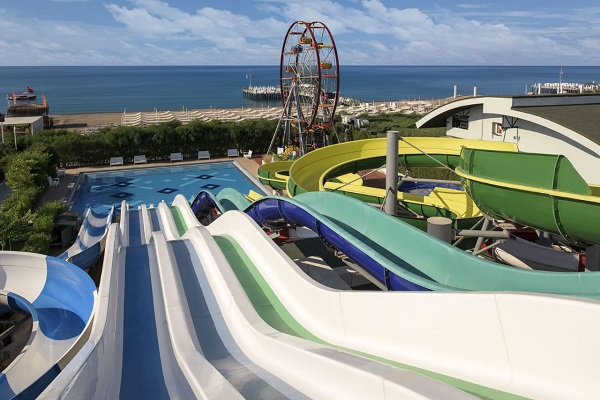

The comfortable Delphin Imperial Hotel Lara lies in a shopping area of Antalya. Delphin Imperial Hotel Lara opened its doors in 2011.
This hotel is about 11 km away from Mall of Antalya. An unique setting near a bus stop offers good public transport connections.
Guests will find a bazaar and shopping centers within minutes of the hotel.
For a comfortable stay in Antalya Delphin Imperial Hotel Lara offers 750 rooms fitted with individual climate control, a mini bar, TV with satellite channels, a safe and a balcony. Rooms come with the sea view. The rooms have luxurious decor.
A breakfast is served in the restaurant. Guests can enjoy special flavors of Italian meals at the indoor restaurant. The night bar has billiards, a terrace and lounge chairs to offer and serves soft drinks, wines and beers.
Delphin Imperial Hotel Lara is within a 15-minute drive to Antalya airport.
24-hour reception, medical service and room service as well as currency exchange, a storage room and a hairdresser are available for guests' use.
Accomodation
"More than you dream of…"
At Delphin Imperial, where all details were meticulously considered to offer you a perfect holiday, there are 650 rooms in total including 505 superior rooms, 38 family rooms, 21 lagoon rooms, 14 suits 64 junior suits and rooms for the disabled. Rooms, which were designed with special interior architecture, bear the traces of post modern and classical styles as well as the vintage & art deco styles. Rooms, which offer elegance as well as functionality, make you feel the luxury and quality far and away…
For the comfort of the families with babies; baby bathing tubes, potties, mini stools, milk, baby bibs, feeding bottle heaters, organic baby formulas can be provided at the rooms upon request.
Food&Beverage
"Splendid taste combined with elegant presentation"
During your stay at Delphin Imperial, you can enjoy splendid tastes with elegant presentations… In addition to the main restaurant Gusto, which has a capacity of 1500 guests and a large terrace, eight a’la carte restaurants offering different tastes from the cuisines of different countries are the gastronomic privileges of Imperial… While being attracted to the tastes at the open buffet at Gusto Restaurant, you will also enjoy the elegant presentations.
While you taste the delicious meals prepared by the award-winning chefs within the hygiene rules, the good-humored Imperial team will be just by your side… Ottoman, Italian, Fusion, French, Far East, Greek…
You can taste all unique tastes of world cuisines at the a’la carte restaurants and remember them for good…
Activities&Events
"Full of fun at Delphin Imperial!"
You can find social activities, which will help you spend your time in a pleasant way, at any time of the day at Delphin Imperial. There is unlimited fun at Delphin Imperial with the animation sports tournaments, pool games during the daytime and the revues, sketches, animation shows, disco and circus shows in the evening.
If you want to spend a more active holiday, you can spend your time at the volleyball and mini football fields or tennis courts, participate in the beach volleyball games or enjoy extreme sports at the water sports center. Outdoor and indoor swimming pools with slides and spa center are waiting for you to spend pleasant time at Delphin Imperial…
While you are enjoying all these activities, your kids will be as happy as you are.
At Delphin Imperial
Animation for the kids and teenagers
Mini Club (between the ages 4 and 12)
Teen Club (between the ages of 13 and 17)
Amusement park, kids’ disco

Kids’ cinema and kids’ menu are all at the service of the kids… Special kid menu at the kids’ restaurant, indoor and outdoor swimming polls, special kids’ bar and sleeping room are among the services offered. At Delphin Imperial, which combines quality with luxury, game saloon, internet café and cinema hall are all thought for you to spend pleasant time…
Spa&Wellness
"You will feel the energy of the nature inside you"
If you wish to rest not only your body but also your soul during your holiday, let yourself into the expert hands Laden Spa. At the Laden Spa, which offers you an unforgettable touch on your soul, you will be welcomed by an expert team. Original Far-east massages, peeling applications, Cleopatra massage applied with honey and milk, special body rituals just for you, skin cares applied by experienced estheticians, Turkish bath, special Russian and Fin saunas are all at Laden Spa… Peace-store Laden Spa, which is spread over area of 2200 m2, is ready to offer you whatever you wish regarding the skin care and massage. Just enjoy your body and soul renewed with the miraculous touches…
(We can remove the ball room, workshop 1,2,3,4 segments on the left.)
Delphin Imperial is appropriate for meeting, congress and wedding organizations with its large halls. Delphin Imperial, which offers service with its 1500 m2 ball room and 140 m2 and 200 m2 separate halls, will be your supporter during your special days and organizations with its good-humored team…